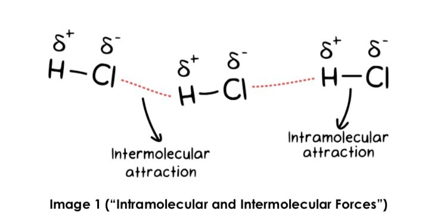
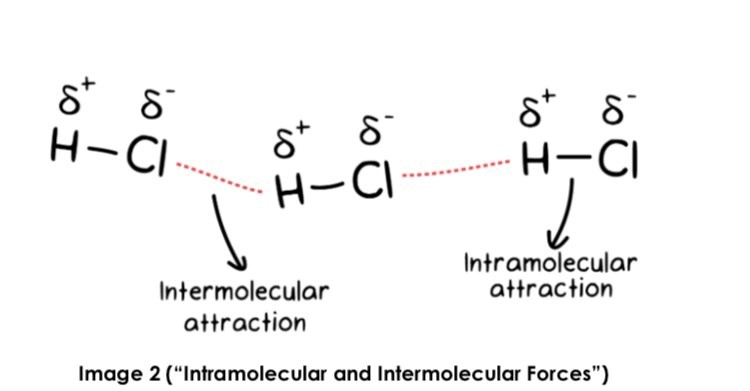
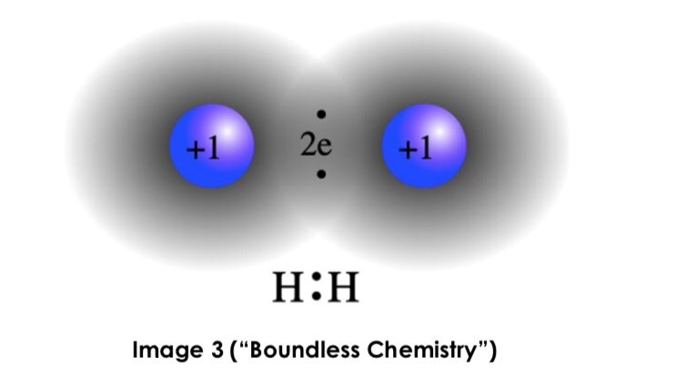
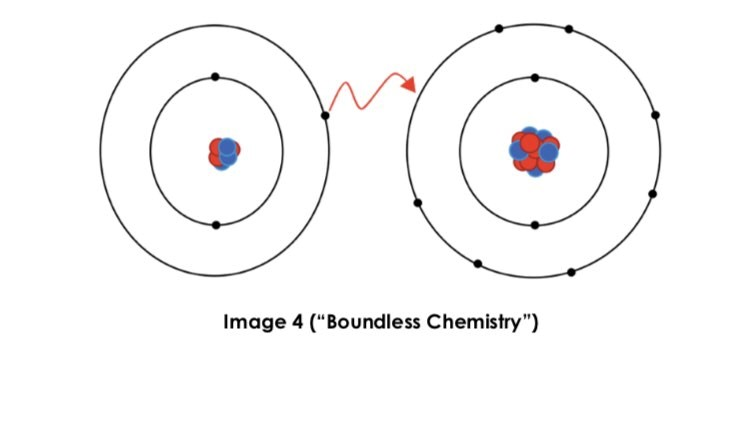
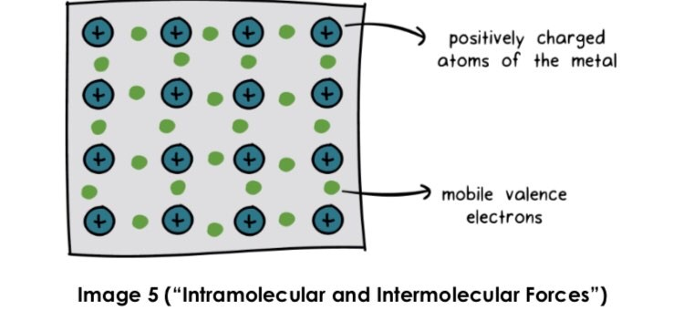
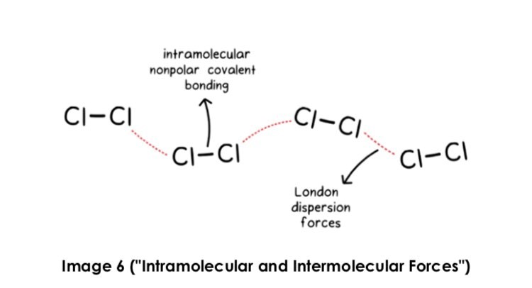
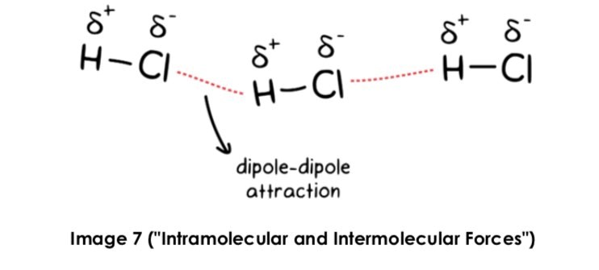
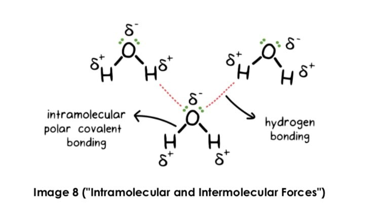
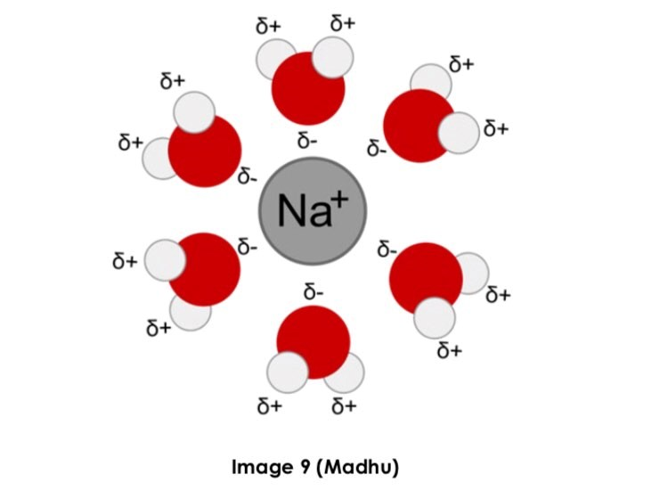

Hi and welcome to HydroLonDify, where are here for you to understand the challenging course concepts with easy to understand videos. In today’s Lesson, we will explore:
Different Intramolecular and Intermolecular Forces
Types of Intermolecular Forces of Attraction
Types of Intermolecular Forces that exist between Molecules
Click on the blue text to learn about a topic.
Let's begin by defining intramolecular and intermolecular Forces. Intramolecular forces exist within a molecule, as 'intra' implies within. Intermolecular forces exist between molecules, as 'inter' implies between. In this picture below, you can notice the difference.
Covalent, ionic, and metallic intramolecular forces are the three forms of intramolecular forces bonding. Between two nonmetals, covalent bonds form. The atoms share electrons in this form of relationship.
Polar and Nonpolar covalent bonds are the two types of covalent bonding. Covalent polar bonds are formed when two atoms with different electronegativity come together. Because of the difference in electronegativity, electrons are shared unequally, causing the more electronegative atom to have a partial negative charge and the more electropositive atom to have a partial positive charge. The intramolecular attraction in this picture is a polar bond.
Nonpolar covalent bonds are formed when two atoms have the same charge electronegativity, which is usually between two of the same atoms or between a pair of atoms. A carbon atom with a hydrogen atom. There are no partial charges since electrons are shared evenly occur. An example of a nonpolar bond is shown below.
Ionic bonding occurs between a cation (which may be a metal or a polyatomic molecule) and an anion (which can be a nonmetal or polyatomic anion). In terms of ionic electrons are totally transported from the cation to the anion in covalent bonds. As a result, the atoms have full charges, as seen in below.
Between metals, metallic bonding occurs. Metal atoms are packed closely together in this sort of bonding, and their electrons become unattached and delocalized, allowing them to travel freely. Between the delocalized electrons and the positive metal nuclei, a strong force exists. It's worth noting that metal atoms do not form cations since the electron detaches but remains in the structure, as seen below.
Let's go through the different varieties of intermolecular forces now that we've reviewed intramolecular forces.
Van der Waals forces are a type of intermolecular force that comprises the following: Dipole-dipole Interactions and London Dispersion according to some accounts, hydrogen bonding is also a Van der Waals force.
All molecules are subject to London dispersion forces. They're caused by electron mobility within the molecule, which creates a brief induced dipole with nearby molecules. To put it another way, as electrons travel about within molecules, momentary partial positive and partial negative charges are created. These partial charges on various molecules interact through London dispersion interactions. Here's an illustration.
Polar molecules interact with each other via dipole-dipole interactions. Molecules with a constant dipole moment. One end of these molecules is partially negative, while the other is partially positive.
It's critical to understand the distinction between a polar bond and a polar bond molecule, since a molecule can have polar links while being nonpolar. If there is a when a molecule lacks polar bonds, it is referred to as a nonpolar molecule. A molecule may or may not be a polar molecule if it has at least one polar link. For a polar molecule is one that has only one central atom and is unsymmetrical or contains a lone pair of electrons on the central atom.
Because polar molecules have partly charged ends, interactions will be more complicated partial positive and partial negative charges on various surfaces molecules. As shown below.
Hydrogen bonding happens when a hydrogen atom is connected to fluorine, oxygen, or nitrogen in a molecule. These three atoms are particularly important. Because they are more electronegative than hydrogen, they form a particularly strong dipole, resulting in a greater contact between molecules. The existence of hydrogen bonding in a molecule suggests that it will take a lot of energy to overcome this contact, indicating a high boiling point. Here's an illustration of a hydrogen bond.
The ion-dipole force, which occurs between two atoms, is another sort of intermolecular interaction. A polar and ionic chemical. In an ion-dipole, there are two attracting forces: (1) between a cation and a polar molecule's partly negative terminus (seen in Image 9) and (2) between an anion and a polar molecule's partial positive end molecule.
Intramolecular forces are generally more powerful than intermolecular forces. The greatest intermolecular force is ion-dipole, followed by hydrogen bonding, dipole-dipole, and London dispersion.